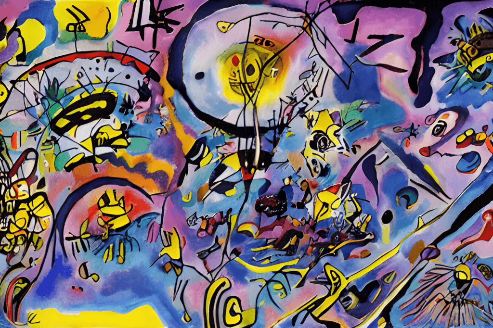
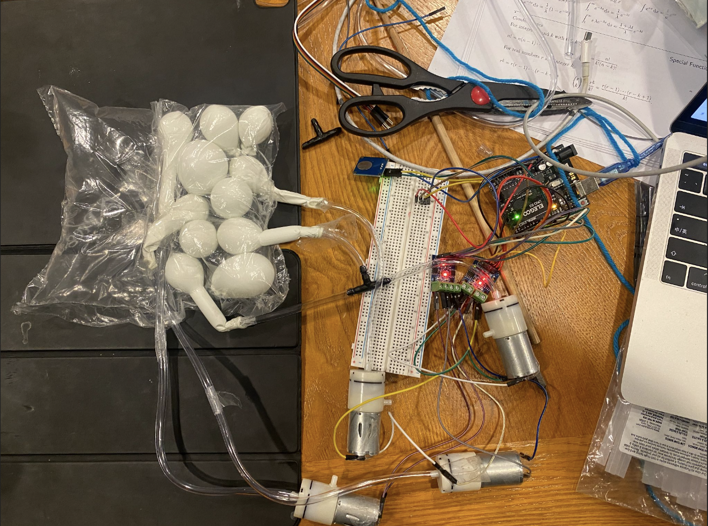

I was introduced to the topic cyborg Day 1 at CMU. In our studio, I worked with my friend Leon Chueng in designing a cyborg device that imagines and extends human capabilties.

I had trouble grasping the concept of cyborg, and what we created was a quite literal representation of cyborg 😹 We explored the idea of a symbiotic cyborg, where the mirrors served as a way to synthesize the vision of the two entities in this cyborg system. The springs and the tubes stresses the force and tension connecting and separating the two entities.

The topics of cyborg and cybernetics persisted throughout my studies at CMU, especially in my computational design courses. I gradually gained interest in machine intelligence. My ultimate vision is to create a homeostatic, cybernetically-informed artifact/installation that is visually appealing, and imagines new ways of interation with humans. I envision this to be a physical system.
I explored using Proccessing and Arduino to create an interactive, homeostatic system in 2D. Each cell in the system follows a pre-defined rule to change its state based on the state of its neighbors. The cells may be born, live, or die based on human interaction.

Finally, this project serves as an exploration to a cybernetic system, and my first explorations in building physical machines. I wanted to create a machine that breathes, and I wanted to see it in a system where each entity is connected and dependent on each other.
The setup is pretty straightforward. I used air pumps and Arduino to control the air pressure in the tubes. The tubes are connected to the air pumps and the Arduino. The Arduino is programmed to control the air pressure in the tubes to create a breathing effect.

The hardest thing for me in this process was figuring out how to make the balloons breathe - having air coming in and out of the tube at the same time. I wasn't able to find a air pump that can do this, so I had to experiment my own way to achieve this effect. I ended up using two air pumps, one to pump air in, and the other to pump air out. The two air pumps are connected to the same tube, and the Arduino is programmed to control the air pumps to create the breathing effect.

Here's the final result! Though it's on a smaller scale, I imagine it developing into a larger, more complex system that can be used in an installation.